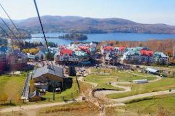

I have spent many summers in Canada, as I have extensive family there on both coasts. One of my earliest memories is of stepping onto the glass floor at CN Tower - I remember being frightened but also thrilled!

When not in Toronto, I was passing time in Vancouver. My grandparents lived nearby in Abbotsford, which was for all intents and purposes a mini-Punjab. Since it was a rural area near farmland, it was also pretty chill. Still, it was always nice to go back to family in Vancouver and get reconnected with the rest of the world!
I would love to visit other parts of Canada, like Nova Scotia. I have been lucky enough to go to the Mont Tremblant resort in Quebec, but I didn't get a chance to really explore Montreal, which we only drove through.. There is so much more I have yet to see!